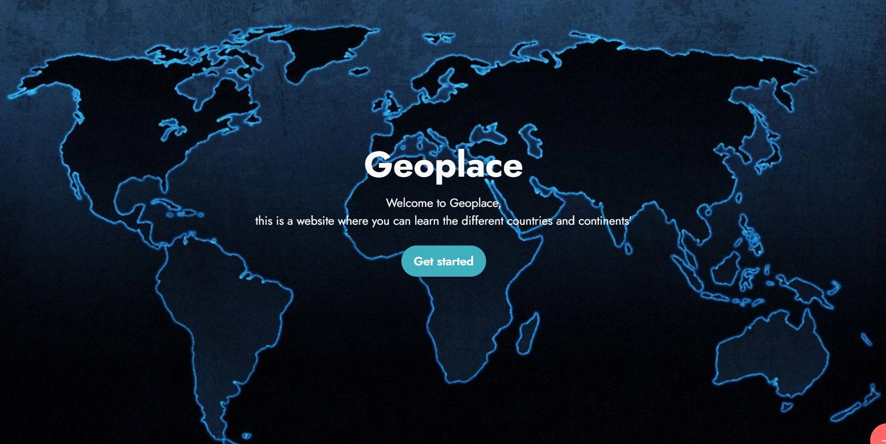

Side projecten
Ik ben begonnen met een paar kleine projecten voor htlm. Een van de projecten die ik van plan ben te maken is er een die ik heb gemaakt in een codeerprogramma genaamd Mobirise en die ik wil omzetten naar html. Het is een website waar je op een willekeurig land in de wereld kunt klikken en dan krijg je informatie over dat land. Ik kon mijn website niet publiceren omdat hij te groot was voor Mobirise. Een doel dat ik wil bereiken voordat dit jaar voorbij is, is het afmaken van deze landenwebsite.

Enkele andere dingen die ik dit jaar wil doen is websites maken voor mijn ouders, omdat ze ideeën hebben voor websites die ze willen en ze willen dat ik ze maak. Mijn moeder maakt haar eigen handcreme dus ze wil een website waar mensen haar producten kunnen bekijken en ik weet niet precies wat voor website mijn vader wil.